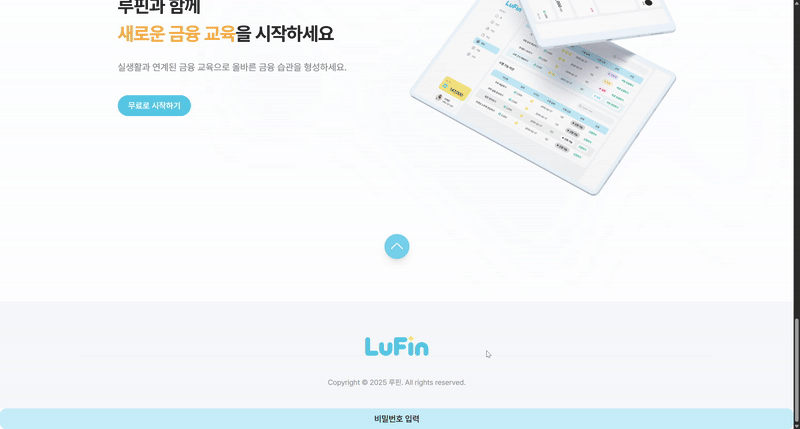

교실 속
작은 경제
LuFin

실감나는 금융 시뮬레이션
금융 사각지대에 놓인 아이들을 위해, 가상의 자산과 신용 점수 시스템을 통해 실물 경제를 안전하게 체험할 수 있는 교육 플랫폼입니다.
금융 사각지대에 놓인 아이들을 위해, 가상의 자산과 신용 점수 시스템을 통해 실물 경제를 안전하게 체험할 수 있는 교육 플랫폼입니다.

신용 점수에 따라 이자율과 한도가 변동되는 현실적인 대출 로직 및 연체/회복 시스템 구현

구매, 환불, 사용 요청 등 상점의 전 과정을 상태 기반 흐름(State-based)으로 설계

타이머 기반 인증 코드 발급 및 검증 로직으로 계정 안전성 확보
초반부터 이벤트 스토밍을 통해 도메인 흐름을 명확히 정의하고, 복잡한 금융 로직을 도메인별로 분리하여 설계의 기반을 다졌습니다.
요구사항 명세서, API 스펙, 에러 코드 정의 등 개발 전 과정의 산출물을 표준화하여 커뮤니케이션 비용을 최소화하고, 기획과 개발 간의 간극을 줄였습니다.